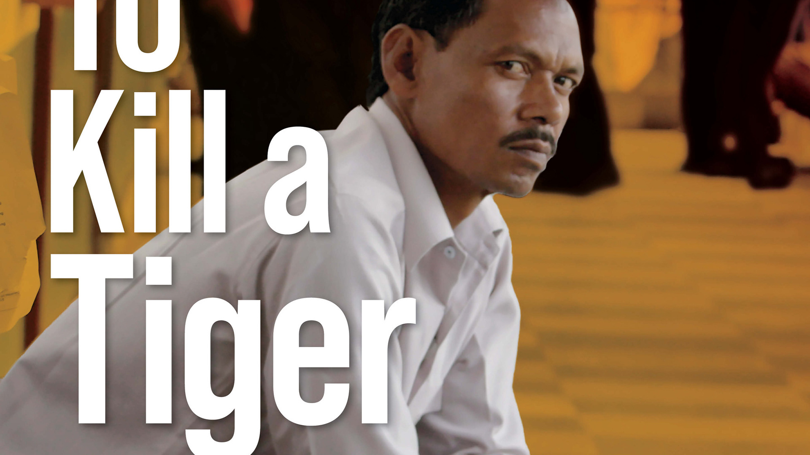

← All work

Academy Award nominee
To Kill a Tiger
Feature · 2022
- MY ROLE
- Media Specialist / Post-Production Coordinator / Assistant Editor
- CREDITS
- National Film Board | Notice Pictures · Dir: Nisha Pahuja · Editors: Dave Kazala, Mike Munn · Prod: Cornelia Principe, David Oppenheim
To Kill a Tiger follows Ranjit, a farmer in rural India, as he demands justice for his 13-year-old daughter after a brutal assault, defying deeply entrenched patriarchal traditions in a village where such advocacy is virtually unheard of.
Nominated for Best Documentary Feature at the 96th Academy Awards. Winner of 20+ awards including Best Documentary at Palm Springs, Best Feature Length Documentary at the Canadian Screen Awards, and the TIFF Amplify Voices Award.